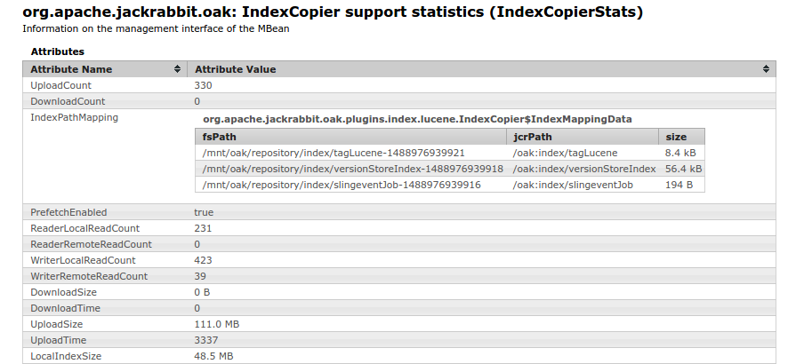
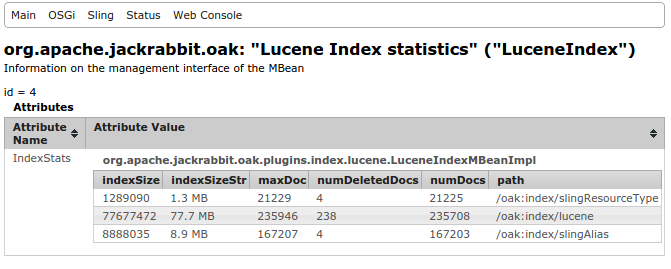

Oak supports Lucene based indexes to support both property constraint and full text constraints. Depending on the configuration a Lucene index can be used to evaluate property constraints, full text constraints, path restrictions and sorting.
SELECT * FROM [nt:base] WHERE [assetType] = 'image'
Following index definition would allow using Lucene index for above query
/oak:index/assetType
- jcr:primaryType = "oak:QueryIndexDefinition"
- compatVersion = 2
- type = "lucene"
- async = "async"
+ indexRules
- jcr:primaryType = "nt:unstructured"
+ nt:base
+ properties
- jcr:primaryType = "nt:unstructured"
+ assetType
- propertyIndex = true
- name = "assetType"
The index definition node for a lucene-based index
Note that compared to Property Index Lucene Property Index is always configured in Async mode hence it might lag behind in reflecting the current repository state while performing the query
Taking another example. To support following query
//*[jcr:contains(., 'text')]
The Lucene index needs to be configured to index all properties
/oak:index/assetType
- jcr:primaryType = "oak:QueryIndexDefinition"
- compatVersion = 2
- type = "lucene"
- async = "async"
+ indexRules
- jcr:primaryType = "nt:unstructured"
+ nt:base
+ properties
- jcr:primaryType = "nt:unstructured"
+ allProps
- name = ".*"
- isRegexp = true
- nodeScopeIndex = true
Lucene index definition consist of indexingRules, analyzers , aggregates etc which determine which node and properties are to be indexed and how they are indexed.
Below is the canonical index definition structure
luceneIndex (oak:QueryIndexDefinition) - type (string) = 'lucene' mandatory - async (string) = 'async' mandatory - blobSize (long) = 32768 - maxFieldLength (long) = 10000 - evaluatePathRestrictions (boolean) = false - name (string) - compatVersion (long) = 2 - includedPaths (string) multiple - excludedPaths (string) multiple - queryPaths (string) multiple = ['/'] - indexPath (string) - codec (string) - refresh (boolean) + indexRules (nt:unstructured) + aggregates (nt:unstructured) + analyzers (nt:unstructured) + tika (nt:unstructured)
Following are the config options which can be defined at the index definition level
Indexing rules defines which types of node and properties are indexed. An index configuration can define one or more indexingRules for different nodeTypes.
fulltextIndex
- jcr:primaryType = "oak:QueryIndexDefinition"
- compatVersion = 2
- type = "lucene"
- async = "async"
+ indexRules
- jcr:primaryType = "nt:unstructured"
+ app:Page
+ properties
- jcr:primaryType = "nt:unstructured"
+ publishedDate
- propertyIndex = true
- name = "jcr:content/publishedDate"
+ app:Asset
+ properties
- jcr:primaryType = "nt:unstructured"
+ imageType
- propertyIndex = true
- name = "jcr:content/metadata/imageType"
Rules are defined per nodeType and each rule has one or more property definitions determine which properties are indexed. Below is the canonical index definition structure
ruleName (nt:unstructured) - inherited (boolean) = true - indexNodeName (boolean) = false - includePropertyTypes (string) multiple + properties (nt:unstructured)
Following are the config options which can be defined at the index rule level
By default, the cost of using this index is calculated follows: For each query, the overhead is one operation. For each entry in the index, the cost is one. The following only applies to compatVersion 2 only: To use use a lower or higher cost, you can set the following optional properties in the index definition:
- costPerExecution (Double) = 1.0 - costPerEntry (Double) = 1.0
Please note that typically, those settings don’t need to be explicitly set. Cost per execution is the overhead of one query. Cost per entry is the cost per node in the index. Using 0.5 means the cost is half, which means the index would be used used more often (that is, even if there is a different index with similar cost).
indexRules are defined per nodeType and support nodeType inheritance. For example while indexing any node the indexer would lookup for applicable indexRule for that node based on its primaryType. If a direct match is found then that rule would be used otherwise it would look for rule for any of the parent types. The rules are looked up in the order of there entry under indexRules node (indexRule node itself is of type nt:unstructured which has orderable child nodes)
If inherited is set to false on any rule then that rule would only be applicable if exact match is found
Each index rule consist of one ore more property definition defined under properties. Order of property definition node is important as some properties are based on regular expressions. Below is the canonical property definition structure
propNode (nt:unstructured) - name (string) - boost (double) = '1.0' - index (boolean) = true - useInExcerpt (boolean) = false - analyzed (boolean) = false - nodeScopeIndex (boolean) = false - ordered (boolean) = false - isRegexp (boolean) = false - type (string) = 'undefined' - propertyIndex (boolean) = false - notNullCheckEnabled (boolean) = false - nullCheckEnabled (boolean) = false - excludeFromAggregation (boolean) = false - weight (long) = -1
Following are the details about the above mentioned config options which can be defined at the property definition level
In case of aggregation all properties would be indexed at node level by default if the property type is part of includePropertyTypes. However if there is an explicit property definition provided then it would only be included if nodeScopeIndex is set to true.
Refer to Lucene based Sorting for more details. Note that this is only supported for single value property. Enabling this on multi value property would cause indexing to fail.
For details, see IS NOT NULL support.
It would be better to use a query which checks for property existence or property being set to specific values as such queries can make use of index without any extra storage cost.
For details, see IS NULL support.
For such cases set weight to 0 for such properties. In such a case IndexPlanner would not use those property definitions to determine if that index can answer the query but it would still use them if some other index entry causes that index to be selected for evaluating such a query.
Refer OAK-5899 for more details
Property name can be one of following
Lucene index provides support for evaluating path restrictions natively. Consider a query like
select * from [app:Asset] as a where isdescendantnode(a, [/content/app/old]) AND contains(*, 'white')
By default the index would return all node which contain white and Query engine would filter out nodes which are not under /content/app/old. This can perform slow if lots of nodes are not under that path. To speed up such queries one can enable evaluatePathRestrictions in Lucene index and index would only return nodes which are under /content/app/old.
Enabling this feature would incur cost in terms of slight increase in index size. Refer to OAK-2306 for more details.
@since Oak 1.0.14, 1.2.3
By default the indexer would index all the nodes under the subtree where the index definition is defined as per the indexingRule. In some cases its required to index nodes under certain path. For e.g. if index is defined for global fulltext index which include the complete repository you might want to exclude certain path which contains transient system data.
For example if you application stores certain logs under /var/log and it is not supposed to be indexed as part of fulltext index then it can be excluded
/oak:index/assetType - jcr:primaryType = "oak:QueryIndexDefinition" - compatVersion = 2 - type = "lucene" - excludedPaths = ["/var/log"]
Above index definition would cause nodes under /var/log not to be indexed. In majority of case excludedPaths only makes sense. However in some cases it might be required to also specify explicit set of path which should be indexed. In that case make use of includedPaths
Note that excludedPaths and includedPaths does not affect the index selection logic for a query i.e. if a query has any path restriction specified then that would not be checked against the excludedPaths and includedPaths.
If you need to ensure that a given index only gets used for query with specific path restrictions then you need to specify those paths in queryPaths.
For example if includedPaths and queryPaths are set to [ “/content/a”, “/content/b” ]. The index would be used for queries below “/content/a” as well as for queries below “/content/b”. But not for queries without path restriction, or for queries below “/content/c”.
Usage
Key points to consider while using excludedPaths, includedPaths and queryPaths
Reduce what gets indexed in global fulltext index - For setups where a global fulltext index is configured say at /oak:index/lucene which indexes everything then excludedPaths can be used to avoid indexing transient repository state like in ‘/var’ or ‘/tmp’. This would help in improving indexing rate. By far this is the primary usecase
Reduce reindexing time - If its known that certain type of data is stored under specific subtree only but the query is not specifying that path restriction then includedPaths can be used to reduce reindexing time for existing content by ensuring that indexing logic only traverses that path for building up the index
Use excludedPaths, includedPaths with caution - When paths are excluded or included then query engine is not aware of that. If wrong paths get excluded then its possible that nodes which should have been part of query result get excluded as they are not indexed. So only exclude those paths which do not have node matching given nodeType or nodes which are known to be not part of any query result
Sub-root index definitions (e.g. /test/oak:index/index-def-node) - excludedPaths and includedPaths need to be relative to the path that index is defined for. e.g. if the condition is supposed to be put for /test/a where the index definition is at /test/oak:index/index-def-node then /a needs to be put as value of excludedPaths or includedPaths. On the other hand, queryPaths remains to be an absolute path. So, for the example above, queryPaths would get the value /test/a.
In most cases use of queryPaths would not be required as index definition should not have any overlap.
Refer to OAK-2599 for more details.
Sometimes it is useful to include the contents of descendant nodes into a single node to easier search on content that is scattered across multiple nodes.
Oak allows you to define index aggregates based on relative path patterns and primary node types. Changes to aggregated items cause the main item to be reindexed, even if it was not modified.
Aggregation configuration is defined under the aggregates node under index configuration. The following example creates an index aggregate on nt:file that includes the content of the jcr:content node:
fulltextIndex
- jcr:primaryType = "oak:QueryIndexDefinition"
- compatVersion = 2
- type = "lucene"
- async = "async"
+ aggregates
+ nt:file
+ include0
- path = "jcr:content"
By default all properties whose type matches includePropertyTypes and are part of child nodes as per the aggregation pattern are included for indexing. For excluding certain properties define a property definition with relative path and set excludeFromAggregation to true. Such properties would then be excluded from fulltext index
For a given nodeType multiple includes can be defined. Below is the aggregate definition structure for any specific include rule
aggregateNodeInclude (nt:unstructured) - path (string) mandatory - primaryType (string) - relativeNode (boolean) = false
Following are the details about the above mentioned config options which can be defined as part of aggregation include. (Refer to OAK-2268 for implementation details)
Restrict the included nodes to a certain type. The restriction would be applied on the last node in given path
+ aggregates
+ nt:file
+ include0
- path = "jcr:content"
- primaryType = "nt:resource"
Boolean property indicates that query can be performed against specific node For example for following content
+ space.txt (app:Asset)
+ renditions (nt:folder)
+ original (nt:file)
+ jcr:content (nt:resource)
- jcr:data
And a query like
select * from [app:Asset] where contains([renditions/original/*], "pluto")
Following index configuration would be required
fulltextIndex
- jcr:primaryType = "oak:QueryIndexDefinition"
- compatVersion = 2
- type = "lucene"
- async = "async"
+ aggregates
+ nt:file
+ include0
- path = "jcr:content"
+ app:Asset
+ include0
- path = "renditions/original"
- relativeNode = true
+ indexRules
- jcr:primaryType = "nt:unstructured"
+ app:Asset
Aggregation and Recursion
While performing aggregation the aggregation rules are again applied on node being aggregated. For example while aggregating for app:Asset above when renditions/original/* is being aggregated then aggregation rule would again be applied. In this case as renditions/original is nt:file then aggregation rule applicable for nt:file would be applied. Such a logic might result in recursion. (See JCR-2989 for details).
For such case reaggregateLimit is set on aggregate definition node and defaults to 5
+ aggregates
+ app:Asset
- reaggregateLimit (long) = 5
+ include0
- path = "renditions/original"
- relativeNode = true
@since Oak 1.5.5, 1.4.7, 1.2.19 Unless custom analyzer is configured (as documented below), in-built analyzer can be configured to include original term as well to be indexed. This is controlled by setting boolean property indexOriginalTerm on analyzers node.
/oak:index/assetType
- jcr:primaryType = "oak:QueryIndexDefinition"
- compatVersion = 2
- type = "lucene"
+ analyzers
- indexOriginalTerm = true
(See OAK-4516 for details)
@since Oak 1.2.0
Analyzers can be configured as part of index definition via analyzers node. The default analyzer can be configured via analyzers/default node
+ sampleIndex
- jcr:primaryType = "oak:QueryIndexDefinition"
+ analyzers
+ default
+ pathText
...
If any of the out of the box analyzer is to be used then it can configured directly
+ analyzers
+ default
- class = "org.apache.lucene.analysis.standard.StandardAnalyzer"
- luceneMatchVersion = "LUCENE_47" (optional)
To confirm to specific version specify it via luceneMatchVersion otherwise Oak would use a default version depending on version of Lucene it is shipped with.
One can also provide a stopword file via stopwords nt:file node under the analyzer node
+ analyzers
+ default
- class = "org.apache.lucene.analysis.standard.StandardAnalyzer"
- luceneMatchVersion = "LUCENE_47" (optional)
+ stopwords (nt:file)
Analyzers can also be composed based on Tokenizers, TokenFilters and CharFilters. This is similar to the support provided in Solr where you can configure analyzers in xml
+ analyzers
+ default
+ charFilters (nt:unstructured) //The filters needs to be ordered
+ HTMLStrip
+ Mapping
+ tokenizer
- name = "Standard"
+ filters (nt:unstructured) //The filters needs to be ordered
+ LowerCase
+ Stop
- words = "stop1.txt, stop2.txt"
+ stop1.txt (nt:file)
+ stop2.txt (nt:file)
+ PorterStem
+ Synonym
- synonyms = "synonym.txt"
+ synonym.txt (nt:file)
Points to note
Note that currently only one analyzer can be configured per index. Its not possible to specify separate analyzer for query and index time currently.
Name of Lucene Codec to use. By default if the index involves fulltext indexing then Oak Lucene uses OakCodec which disables compression. Due to this the index size may grow large. To enable compression you can set the codec to Lucene46
/oak:index/assetType - jcr:primaryType = "oak:QueryIndexDefinition" - compatVersion = 2 - type = "lucene" - codec = "Lucene46"
Refer to OAK-2853 for details. Enabling the Lucene46 codec would lead to smaller and compact indexes.
@since Oak 1.2.5
When fulltext indexing is enabled then internally Oak would create a fulltext field which consists of text extracted from various other fields i.e. fields for which nodeScopeIndex is true. This allows search like //*[jcr:contains(., 'foo')] to perform search across any indexable field containing foo (See contains function for details)
In certain cases its desirable that those nodes where the searched term is present in a specific property are ranked higher (come earlier in search result) compared to those node where the searched term is found in some other property.
In such cases it should be possible to boost specific text contributed by individual property. Meaning that if a title field is boosted more than description, then search result would those node coming earlier where searched term is found in title field
For that to work ensure that for each such property (which need to be preferred) both nodeScopeIndex and analyzed are set to true. In addition you can specify boost property so give higher weightage to values found in specific property
Note that even without setting explicit boost and just setting nodeScopeIndex and analyzed to true would improve the search result due to the way Lucene does scoring. Internally Oak would create separate Lucene fields for those jcr properties and would perform a search across all such fields. For more details refer to OAK-3367
+ indexRules
- jcr:primaryType = "nt:unstructured"
+ app:Asset
+ properties
- jcr:primaryType = "nt:unstructured"
+ description
- nodeScopeIndex = true
- analyzed = true
- name = "jcr:content/metadata/jcr:description"
+ title
- analyzed = true
- nodeScopeIndex = true
- name = "jcr:content/metadata/jcr:title"
- boost = 2.0
With above index config a search like
SELECT * FROM [app:Asset] WHERE CONTAINS(., 'Batman')
Would have those node (of type app:Asset) come first where Batman is found in jcr:title. While those nodes where search text is found in other field like aggregated content would come later
@since Oak 1.6
Prior to Oak 1.6 index definition as defined in content was directly used for query execution and indexing. It was possible that index definition is modified in incompatible way and that would start affecting the query execution leading to inconsistent result.
Since Oak 1.6 the index definitions are cloned upon reindexing and stored in a hidden structure. For further incremental indexing and for query plan calculation the stored index definition is used. So any changes done post reindex to index definition would not be applicable untill a reindex is done.
There would be some cases where changes in index definition does not require a reindex. For e.g. if a new property is being introduced in content model and no prior content exist with such a property then its safe to index such a property without doing a reindex. For such cases user must follow below steps
On next async indexing cycle this flag would be pickedup and stored index definition would be refreshed. Post this the flag would be automatically removed and a log message would be logged. You would also see a log message like below
LuceneIndexEditorContext - Refreshed the index definition for [/oak:index/fooLuceneIndex]
To simplify troubleshooting the stored index definition can be accessed from LuceneIndexMBean via getStoredIndexDefinition operation. It would dump the string representation of stored NodeState
This feature can be disabled by setting OSGi property disableStoredIndexDefinition for LuceneIndexProviderService to true. Once disable any change in index definition would start effecting the query plans
Refer to OAK-4400 for more details.
To simplify generating index definition suitable for evaluating certain set of queries you can make use of http://oakutils.appspot.com/generate/index. Here you can provide a set of queries and then it would generate the suitable index definitions for those queries.
Note that you would still need to tweak the definition for aggregation, path include exclude etc as that data cannot be inferred from the query
Some of the runtime aspects of the Oak Lucene support can be configured via OSGi configuration. The configuration needs to be done for PID org.apache .jackrabbit.oak.plugins.index.lucene.LuceneIndexProviderService

@since Oak 1.0.12, 1.2.3
Oak Lucene uses Apache Tika to extract the text from binary content
+ tika
- maxExtractLength (long) = -10
+ config.xml (nt:file)
+ jcr:content
- jcr:data = //config xml binary content
Oak uses a default config. To use a custom config specify the config file via tika/config.xml node in index config.
A binary would only be index if there is an associated property jcr:mimeType defined and that is supported by Tika. By default indexer uses TypeDetector instead of default DefaultDetector which relies on the jcr:mimeType to pick up the right parser.
@since Oak 1.7.7
In certain circumstances, it may be desired to pass a value other than the jcr:mimeType property into the Tika parser. For example, this would be necessary if a binary has an application-specific mime type, but is parsable by the standard Tika parser for some generic type. To support these cases, create a node structure under the tika/mimeTypes node following the mime type structure, e.g.
+ tika
+ mimeTypes (nt:unstructured)
+ application (nt:unstructured)
+ vnd.mycompany-document (nt:unstructured)
- mappedType = application/pdf
When this index is indexing a binary of type application/vnd.mycompany-document it will force Tika to treat it as a binary of type application/pdf.
Lucene index definition can be defined at any location in repository and need not always be defined at root. For example if your query involves path restrictions like
select * from [app:Asset] as a where ISDESCENDANTNODE(a, '/content/companya') and [format] = 'image'
Then you can create the required index definition say assetIndex at /content/companya/oak:index/assetIndex. In such a case that index would contain data for the subtree under /content/companya
Oak query engine supports native queries like
//*[rep:native('lucene', 'name:(Hello OR World)')]
If multiple Lucene based indexes are enabled on the system and you need to make use of specific Lucene index like /oak:index/assetIndex then you can specify the index name via functionName attribute on index definition.
For example for assetIndex definition like
- jcr:primaryType = "oak:QueryIndexDefinition" - type = "lucene" ... - functionName = "lucene-assetIndex"
Executing following query would ensure that Lucene index from assetIndex should be used
//*[rep:native('lucene-assetIndex', 'name:(Hello OR World)')]
By default Lucene indexes are stored in the NodeStore. If required they can be stored on the file system directly
- jcr:primaryType = "oak:QueryIndexDefinition" - type = "lucene" ... - persistence = "file" - path = "/path/to/store/index"
To store the Lucene index in the file system, in the Lucene index definition node, set the property persistence to file, and set the property path to the directory where the index should be stored. Then start reindexing by setting reindex to true.
Note that this setup would only for those non cluster NodeStore. If the backend NodeStore supports clustering then index data would not be accessible on other cluster nodes
Lucene indexes are stored in NodeStore. Oak Lucene provides a custom directory implementation which enables Lucene to load index from NodeStore. This might cause performance degradation if the NodeStore storage is remote. For such case Oak Lucene provide a CopyOnReadDirectory which copies the index content to a local directory and enables Lucene to make use of local directory based indexes while performing queries.
At runtime various details related to copy on read features are exposed via CopyOnReadStats MBean. Indexes at JCR path e.g. /oak:index/assetIndex would be copied to <index dir>/<hash of jcr path>. To determine mapping between local index directory and JCR path refer to the MBean details

For more details refer to OAK-1724. This feature can be enabled via Lucene Index provider service configuration
With Oak 1.0.13 this feature is now enabled by default.
@since Oak 1.0.15, 1.2.3
Similar to CopyOnRead feature Oak Lucene also supports CopyOnWrite to enable faster indexing by first buffering the writes to local filesystem and transferring them to remote storage asynchronously as the indexing proceeds. This should provide better performance and hence faster indexing times.
indexPath
Not required from Oak 1.6 , 1.4.7+
To speed up the indexing with CopyOnWrite you would also need to set indexPath in index definition to the path of index in the repository. For e.g. if your index is defined at /oak:index/lucene then value of indexPath should be set to /oak:index/lucene. This would enable the indexer to perform any read during the indexing process locally and thus avoid costly read from remote.
For more details refer to OAK-2247. This feature can be enabled via Lucene Index provider service configuration
Oak Lucene registers a JMX bean LuceneIndex which provide details about the index content e.g. size of index, number of documents present in index etc

@since Oak 1.7.1
Lucene indexing for moderately active repository creates a lot of deleted files. This creates excessive load for usual mark-sweep garbage collection. Since, blobs related to indexed data are explicitly made unique, it’s safe to delete them as soon as index node referring that blob is deleted.
Such active deletion of index blobs was implemented in OAK-2808. The feature periodically deletes blobs which are deleted from the index. This ‘period’ can be controlled by deletedBlobsCollectionInterval property in Lucene Index provider service configuration.
The feature would only delete blobs which have been deleted before a certain time. This is 24 hours by default and can be controlled by defining oak.active.deletion.minAge as number of hours to not purge a blob after it’s deleted from the repository.
Luke is a handy development and diagnostic tool, which accesses already existing Lucene indexes and allows you to display index details. In Oak Lucene index files are stored in NodeStore and hence not directly accessible. To enable analyzing the index files via Luke follow below mentioned steps
Download the Luke version which includes the matching Lucene jars used by Oak. As of Oak 1.0.8 release the Lucene version used is 4.7.1. So download the jar from here
$wget https://github.com/DmitryKey/luke/releases/download/4.7.0/luke-with-deps.jar
Use the Oak Console to dump the Lucene index from NodeStore to filesystem directory. Use the lc dump command
$ java -jar oak-run-*.jar console /path/to/oak/repository Apache Jackrabbit Oak 1.1-SNAPSHOT Jackrabbit Oak Shell (Apache Jackrabbit Oak 1.1-SNAPSHOT, JVM: 1.7.0_55) Type ':help' or ':h' for help. ------------------------------------------------------------------------- /> lc info /oak:index/lucene Index size : 74.1 MB Number of documents : 235708 Number of deleted documents : 231 /> lc dump info /> lc dump /path/to/dump/index/lucene /oak:index/lucene Copying Lucene indexes to [/path/to/dump/index/lucene] Copied 74.1 MB in 1.209 s /> lc dump /path/to/dump/index/slingAlias /oak:index/slingAlias Copying Lucene indexes to [/path/to/dump/index/lucene-index/slingAlias] Copied 8.5 MB in 218.7 ms />
Post dump open the index via Luke. Oak Lucene uses a custom Codec. So oak-lucene jar needs to be included in Luke classpath for it to display the index details
$ java -XX:MaxPermSize=512m -cp luke-with-deps.jar:oak-lucene-1.0.8.jar org.getopt.luke.Luke
From the Luke UI shown you can access various details.
Refer to pre-extraction via oak-run.
@since Oak 1.1.17, 1.0.15
In order to use Lucene index to perform search suggestions, the index definition node (the one of type oak:QueryIndexDefinition) needs to have the compatVersion set to 2, then one or more property nodes, depending on use case, need to have the property useInSuggest set to true, such setting controls from which properties terms to be used for suggestions will be taken.
Once the above configuration has been done, by default, the Lucene suggester is updated every 10 minutes but that can be changed by setting the property suggestUpdateFrequencyMinutes in suggestion node under the index definition node to a different value. Note that up till Oak 1.3.14/1.2.14, suggestUpdateFrequencyMinutes was to be setup at index definition node itself. That is is still supported for backward compatibility, but having a separate suggestion node is preferred.
Sample configuration for suggestions based on terms contained in jcr:description property.
/oak:index/lucene-suggest
- jcr:primaryType = "oak:QueryIndexDefinition"
- compatVersion = 2
- type = "lucene"
- async = "async"
+ suggestion
- suggestUpdateFrequencyMinutes = 20
+ indexRules
- jcr:primaryType = "nt:unstructured"
+ nt:base
+ properties
- jcr:primaryType = "nt:unstructured"
+ jcr:description
- propertyIndex = true
- analyzed = true
- useInSuggest = true
@since Oak 1.3.12, 1.2.14 the index Analyzer can be used to perform a have more fine grained suggestions, e.g. single words (whereas default suggest configuration returns entire property values, see [OAK-3407]: https://issues.apache.org/jira/browse/OAK-3407). Analyzed suggestions can be enabled by setting “suggestAnalyzed” property to true, e.g.:
/oak:index/lucene-suggest
- jcr:primaryType = "oak:QueryIndexDefinition"
- compatVersion = 2
- type = "lucene"
- async = "async"
+ suggestion
- suggestUpdateFrequencyMinutes = 20
- suggestAnalyzed = true
Note that up till Oak 1.3.14/1.2.14, suggestAnalyzed was to be setup at index definition node itself. That is is still supported for backward compatibility, but having a separate suggestion node is preferred.
Setting up useInSuggest=true for a property definition having name=:nodeName would add node names to suggestion dictionary (See property name for node name indexing)
Since, Oak 1.3.16/1.2.14, very little support exists for queries with ISDESCENDANTNODE constraint to subset suggestions on a sub-tree. It requires evaluatePathRestrictions=true on index definition. e.g. SELECT rep:suggest() FROM [nt:base] WHERE SUGGEST('test') AND ISDESCENDANTNODE('/a/b') or /jcr:root/a/b//[rep:suggest('in 201')]/(rep:suggest()) Note, the subset is done by filtering top 10 suggestions. So, it’s possible to get no suggestions for a subtree query, if top 10 suggestions are not part of that subtree. For details look at OAK-3994 and related issues.
@since Oak 1.1.17, 1.0.13
In order to use Lucene index to perform spellchecking, the index definition node (the one of type oak:QueryIndexDefinition) needs to have the compatVersion set to 2, then one or more property nodes, depending on use case, need to have the property useInSpellcheck set to true, such setting controls from which properties terms to be used for spellcheck corrections will be taken.
Sample configuration for spellchecking based on terms contained in jcr:title property.
Since Oak 1.3.11/1.2.14, the each suggestion would be returned per row.
/oak:index/lucene-spellcheck
- jcr:primaryType = "oak:QueryIndexDefinition"
- compatVersion = 2
- type = "lucene"
- async = "async"
+ indexRules
- jcr:primaryType = "nt:unstructured"
+ nt:base
+ properties
- jcr:primaryType = "nt:unstructured"
+ jcr:title
- propertyIndex = true
- analyzed = true
- useInSpellcheck = true
Since, Oak 1.3.16/1.2.14, very little support exists for queries with ISDESCENDANTNODE constraint to subset suggestions on a sub-tree. It requires evaluatePathRestrictions=true on index definition. e.g. SELECT rep:suggest() FROM [nt:base] WHERE SUGGEST('test') AND ISDESCENDANTNODE('/a/b') or /jcr:root/a/b//[rep:suggest('in 201')]/(rep:suggest()) Note, the subset is done by filtering top 10 spellchecks. So, it’s possible to get no results for a subtree query, if top 10 spellchecks are not part of that subtree. For details look at OAK-3994 and related issues.
@since Oak 1.3.14
Lucene property indexes can also be used for retrieving facets, in order to do so the property facets must be set to true on the property definition.
/oak:index/lucene-with-facets
- jcr:primaryType = "oak:QueryIndexDefinition"
- compatVersion = 2
- type = "lucene"
- async = "async"
+ indexRules
- jcr:primaryType = "nt:unstructured"
+ nt:base
+ properties
- jcr:primaryType = "nt:unstructured"
+ jcr:title
- facets = true
- propertyIndex = true
Specific facet related features for Lucene property index can be configured in a separate facets node below the index definition. By default ACL checks are always performed on facets by the Lucene property index however this can be avoided by setting the property secure to false in the facets configuration node. @since Oak 1.5.15 The no. of facets to be retrieved is configurable via the topChildren property, which defaults to 10.
/oak:index/lucene-with-unsecure-facets
- jcr:primaryType = "oak:QueryIndexDefinition"
- compatVersion = 2
- type = "lucene"
- async = "async"
+ facets
- topChildren = 100
- secure = false
+ indexRules
- jcr:primaryType = "nt:unstructured"
+ nt:base
+ properties
- jcr:primaryType = "nt:unstructured"
+ jcr:title
- facets = true
- propertyIndex = true
@since Oak 1.3.12
Lucene supports explanation of scores which can be selected in a query using a virtual column oak:scoreExplanation. e.g. select [oak:scoreExplanation], * from [nt:base] where foo='bar'
Note that showing explanation score is expensive. So, this feature should be used for debug purposes only.
@since Oak 1.3.14
In OSGi enviroment, implementations of IndexFieldProvider and FulltextQueryTermsProvider under org.apache.jackrabbit.oak.plugins.index.lucene.spi (see javadoc here) are called during indexing and querying as documented in javadocs.
Lucene index provides quite a few features to meet various query requirements. While defining the index definition do consider the following aspects
If query uses different path restrictions keeping other restrictions same then make use of evaluatePathRestrictions
If query performs sorting then have an explicit property definition for the property on which sorting is being performed and set ordered to true for that property
If the query is based on specific nodeType then define indexRules for that nodeType
Aim for a precise index configuration which indexes just the right amount of content based on your query requirement. An index which is precise would be smaller and would perform better.
Make use of nodetype to achieve a cohesive index. This would allow multiple queries to make use of same index and also evaluation of multiple property restrictions natively in Lucene
Non root indexes - If your query always perform search under certain paths then create index definition under those paths only. This might be helpful in multi tenant deployment where each tenant data is stored under specific repository path and all queries are made under those path.
In fact its recommended to use single index if all the properties being indexed are related. This would enable Lucene index to evaluate as much property restriction as possible natively (which is faster) and also save on storage cost incurred in storing the node path.
Use features when required - There are certain features provided by Lucene index which incur extra cost in terms of storage space when enabled. For example enabling evaluatePathRestrictions, ordering etc. Enable such option only when you make use of those features and further enable them for only those properties. So ordering should be enabled only when sorting is being performed for those properties and evaluatePathRestrictions should only be enabled if you are going to specify path restrictions.
Avoid overlapping index definition - Do not have overlapping index definition indexing same nodetype but having different includedPaths and excludedPaths. Index selection logic does not make use of the includedPaths and excludedPaths for index selection. Index selection is done only on cost basis and queryPaths. Having multiple definition for same type would cause ambiguity in index selection and may lead to unexpected results. Instead have a single index definition for same type.
Following analogy might be helpful to people coming from RDBMS world. Treat your nodetype as Table in your DB and all the direct or relative properties as columns in that table. Various property definitions can then be considered as index for those columns.
The Apache Lucene version currently used in Oak has a limit of about 2^31 documents per index (this includes Lucene version 6). If a larger index is needed, please use Apache Solr, which doesn’t have this limit.
Lucene based index can be restricted to index only specific properties and in that case it is similar to Property Index. However it differs from property index in following aspects
Lucene index is Asynchronous - Lucene indexing is done asynchronously with a default interval of 5 secs. If there are lots of writes and those writes are related to what is being indexed then it might cause further delay. Compared to this the property index are always synchronous and upto date.
So if in your usecase you need the latest result then prefer Property Indexes over Lucene Index. Oak 1.6 supports Near Realtime Indexing which reduce the lag considerably. With this you should be able to use lucene indexing for most cases
Lucene index cannot enforce uniqueness constraint - By virtue of it being asynchronous it cannot enforce uniqueness constraint.
Have a look at generating index definition for some tooling details which simplify generating index definition for given set of queries
In many cases the query is purely based on some specific property and is not restricted to any specific nodeType
SELECT * FROM [nt:base] AS s WHERE ISDESCENDANTNODE([/content/public/platform]) AND s.code = 'DRAFT'
Following index definition would allow using Lucene index for above query
/oak:index/assetType
- jcr:primaryType = "oak:QueryIndexDefinition"
- compatVersion = 2
- type = "lucene"
- async = "async"
- evaluatePathRestrictions = true
+ indexRules
- jcr:primaryType = "nt:unstructured"
+ nt:base
+ properties
- jcr:primaryType = "nt:unstructured"
+ code
- propertyIndex = true
- name = "code"
Above definition
Now you have another query like SELECT * FROM [nt:base] AS s WHERE s.status = 'DONE'
Here we can either add another property to the above definition or create a new index definition altogether. By default prefer to club such indexes together
/oak:index/assetType
- jcr:primaryType = "oak:QueryIndexDefinition"
- compatVersion = 2
- type = "lucene"
- async = "async"
- evaluatePathRestrictions = true
+ indexRules
- jcr:primaryType = "nt:unstructured"
+ nt:base
+ properties
- jcr:primaryType = "nt:unstructured"
+ code
- propertyIndex = true
- name = "code"
+ status
- propertyIndex = true
- name = "status"
Taking another example. Lets say you perform a range query like
SELECT
[jcr:path],
[jcr:score],
*
FROM [nt:base] AS a
WHERE isdescendantnode(a, '/content')
AND [offTime] > CAST('2015-04-06T02:28:33.032-05:00' AS date)
This can also be clubbed in same index definition above
/oak:index/assetType
- jcr:primaryType = "oak:QueryIndexDefinition"
- compatVersion = 2
- type = "lucene"
- async = "async"
- evaluatePathRestrictions = true
+ indexRules
- jcr:primaryType = "nt:unstructured"
+ nt:base
+ properties
- jcr:primaryType = "nt:unstructured"
+ code
- propertyIndex = true
- name = "code"
+ status
- propertyIndex = true
- name = "status"
+ offTime
- propertyIndex = true
- name = "offTime"
Queries in previous examples were based on mostly unstructured content where no nodeType restrictions were applied. However in many cases the nodes being queried confirm to certain structure. For example you have following content
/content/dam/assets/december/banner.png
- jcr:primaryType = "app:Asset"
+ jcr:content
- jcr:primaryType = "app:AssetContent"
+ metadata
- dc:format = "image/png"
- status = "published"
- jcr:lastModified = "2009-10-9T21:52:31"
- app:tags = ["properties:orientation/landscape", "marketing:interest/product"]
- size = 450
- comment = "Image for december launch"
- jcr:title = "December Banner"
+ xmpMM:History
+ 1
- softwareAgent = "Adobe Photoshop"
- author = "David"
+ renditions (nt:folder)
+ original (nt:file)
+ jcr:content
- jcr:data = ...
Content like above is then queried in multiple ways. So lets take first query
UC1 - Find all assets which are having status as published
SELECT * FROM [app:Asset] AS a WHERE a.[jcr:content/metadata/status] = 'published'
For this following index definition would be have to be created
/oak:index/assetType
- jcr:primaryType = "oak:QueryIndexDefinition"
- compatVersion = 2
- type = "lucene"
- async = "async"
+ indexRules
- jcr:primaryType = "nt:unstructured"
+ app:Asset
+ properties
- jcr:primaryType = "nt:unstructured"
+ status
- propertyIndex = true
- name = "jcr:content/metadata/status"
Above index definition
UC2 - Find all assets which are having status as published sorted by last modified date
SELECT * FROM [app:Asset] AS a WHERE a.[jcr:content/metadata/status] = 'published' ORDER BY a.[jcr:content/metadata/jcr:lastModified] DESC
To enable above query the index definition needs to be updated to following
+ app:Asset
+ properties
- jcr:primaryType = "nt:unstructured"
+ status
- propertyIndex = true
- name = "jcr:content/metadata/status"
+ lastModified
- propertyIndex = true
- name = "jcr:content/metadata/jcr:lastModified"
- ordered = true
- type = Date
Above index definition
UC3 - Find all assets where comment contains december
SELECT * FROM [app:Asset] WHERE CONTAINS([jcr:content/metadata/comment], 'december')
To enable above query the index definition needs to be updated to following
+ app:Asset
+ properties
- jcr:primaryType = "nt:unstructured"
+ comment
- name = "jcr:content/metadata/comment"
- analyzed = true
Above index definition
UC4 - Find all assets which are created by David and refer to december
SELECT * FROM [app:Asset] WHERE CONTAINS(., 'december david')
Here we want to create a fulltext index for all assets. It would index all the properties in app:Asset including all relative nodes. To enable that we need to make use of aggregation
/oak:index/assetType
- jcr:primaryType = "oak:QueryIndexDefinition"
- compatVersion = 2
- type = "lucene"
- async = "async"
+ aggregates
+ app:Asset
+ include0
- path = "jcr:content"
+ include1
- path = "jcr:content/metadata"
+ include2
- path = "jcr:content/metadata/*"
+ include3
- path = "jcr:content/metadata/*/*"
+ include4
- path = "jcr:content/renditions"
+ include5
- path = "jcr:content/renditions/original"
+ nt:file
+ include0
- path = "jcr:content"
+ indexRules
- jcr:primaryType = "nt:unstructured"
+ app:Asset
- includePropertyTypes = ["String", "Binary"]
+ properties
- jcr:primaryType = "nt:unstructured"
+ comment
- propertyIndex = true
- nodeScopeIndex = true
- name = "jcr:content/metadata/comment"
Above index definition
Only indexes String and Binary properties as part of fulltext index via includePropertyTypes
Has aggregates defined for various relative paths like jcr:content, jcr:content/metadata, jcr:content/renditions/original etc.
With these rules properties like banner.png/metadata/comment, banner.png/metadata/xmpMM:History/1/author get indexed as part for fulltext index for banner.png node.
Inclusion of jcr:content/renditions/original would lead to aggregation of jcr:content/renditions/original/jcr:content/jcr:data property also as aggregation logic would apply rules for nt:file while aggregating the original node
Aggregation would include by default all properties which are part of includePropertyTypes. However if any property has a explicit property definition provided like comment then nodeScopeIndex would need to be set to true
Above definition would allow fulltext query to be performed. But we can do more. Suppose you want to give more preference to those nodes where the fulltext term is found in jcr:title compared to any other field. In such cases we can boost such fields
+ indexRules
- jcr:primaryType = "nt:unstructured"
+ app:Asset
+ properties
- jcr:primaryType = "nt:unstructured"
+ comment
- propertyIndex = true
- nodeScopeIndex = true
- name = "jcr:content/metadata/comment"
+ title
- propertyIndex = true
- nodeScopeIndex = true
- name = "jcr:content/metadata/jcr:title"
- boost = 2.0